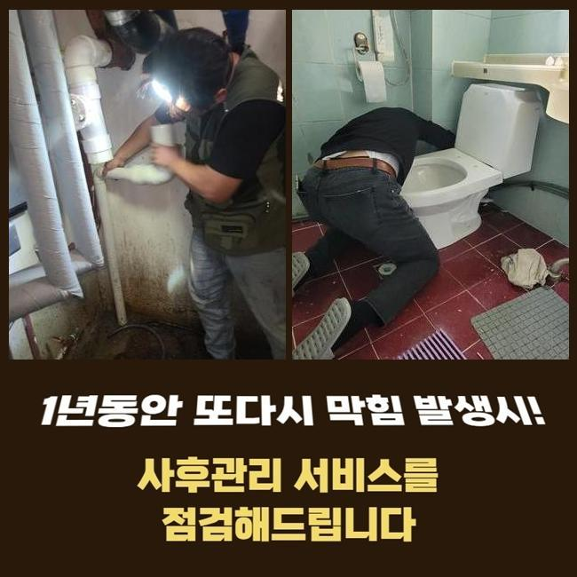
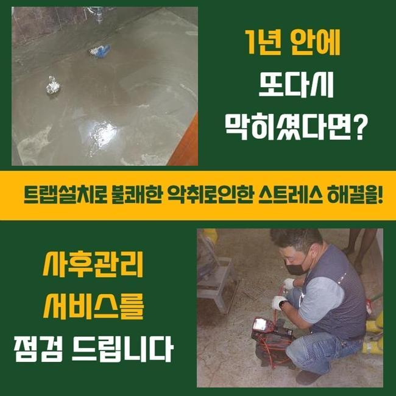
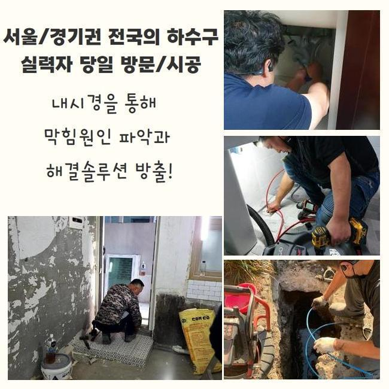
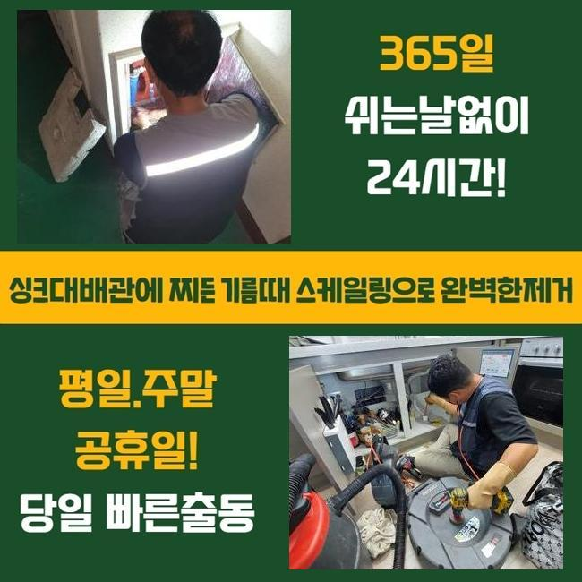
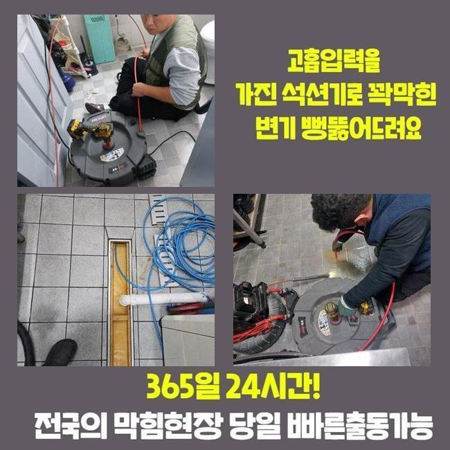
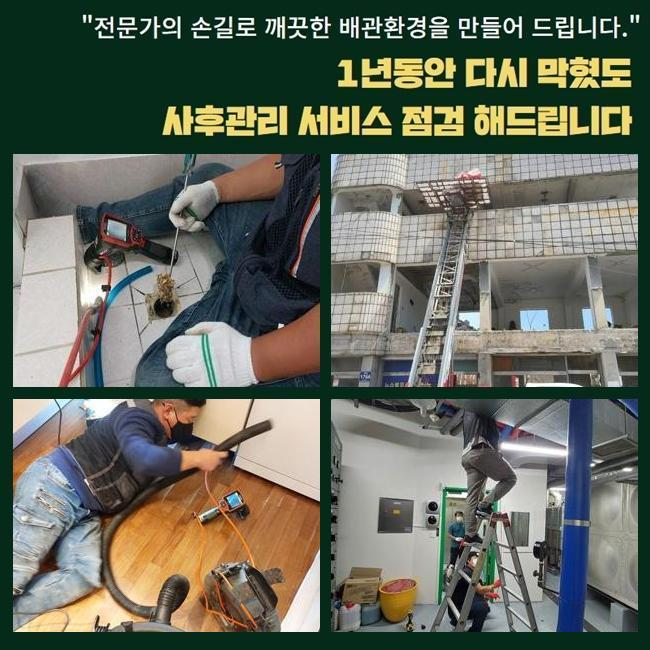
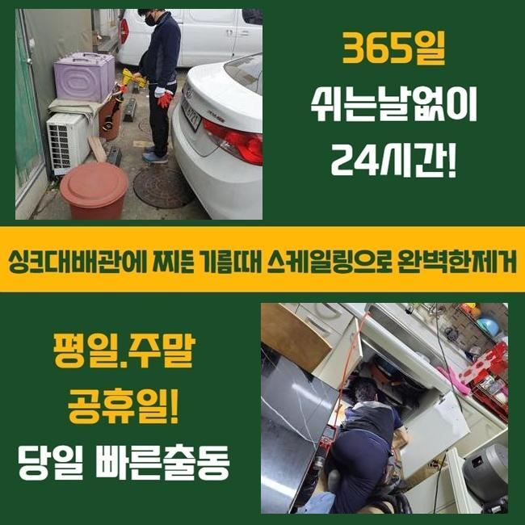

🏠 송파구 가락동하수구역류 잠실7동 배관내시경카메라 누수
용인 하수구막힘 전문 시공 후기

📋 작업 개요
- 위치: 용인
- 서비스 유형: 하수구막힘, 배관막힘, 누수수리, 역류해결, 뚫는업체, 배관청소, 설비공사
- 작업 일시: 2024. 11. 25. 12:22
- 업체명: 하수구수사대 (010-5615-2118)
🔍 문제 상황
송파구 가락동하수구역류 잠실7동 배관내시경카메라 누수
본 글에선 배관막힘이 발발해 굴착을 통하여 해결해드린 지점을 말씀드려볼까 해요
보통의 업무와 달리 이런 일에는 여러종류의 공정들이 내포되어 있단걸 말씀드려요
건물소유자셨던 의뢰인께선 최근들어 상가건물에 거주하시는 분들로부터 배수문으로 물빠짐이 시원치않다는 다양한 불만에 정신이 없으시다면서 신속하게 정리해달라고 전화해주셨어요
공동하수관이 막혀버린다면 그곳과 연관된 곳에선 배수기능이 적합하게 이루어지기가 매우 힘들죠
한개의 배수관이 수많은 세대들에 불편을 초래하는겁니다
이것을 컨트롤하는 담장자는 그러한 사태들을 마주하신다면 대단히 갑갑하실겁니다
그렇기 때문에 전문배관 수리업자의 도움으로 속히 수리를 하시는게 좋은데요
늦게 수리하면 피해수준을 증가하게만들수 있습니다
만약에 이럴때 지출부담으로 인해서 시공을 망설인다면 나중에 막대한 문제가 벌어지기도 한답니다
속히 문제점을 처치해 드리기 위하여 작업도구들을 차량에 실은다음 의뢰자께서 말씀해주신 주소지로 출동했습니다
의뢰인분에게 간단한 이야기를 듣고 문제가 생긴곳으로 자리를 옮겼습니다
저희들은 전날에 여기에 와서 점검을 한후 굴토할 구간을 정해두었죠
그리고나서 고객님의 생각을 청취한뒤 하루지난 다음 오전중에 굴착하기로 결단한 것인데요

🔎 원인 분석
💡 전문가 진단: 정밀 진단 장비를 사용하여 슬러지의 고착 여부를 판명하고 타격/세척 작업을 실시했습니다.
저희쪽에선 이른새벽이나 12시가 지난 밤에 일하는게 거리낌없지만 손님분의 견해를 우선한다는걸 알려드려요
또한 현장의 상황으로 소음 등으로 불편함을 토로하여 메인시공을 시행하지못하는 정황도 생겨날수 있어요
그런것들도 저희측에서 미리 알아두고 시공계획에 반영하고 있어요
먼저 체크해둔 영역을 기준하여 굴토를 시행키로 했죠
혹시나 하는마음으로 문제가 일어난 파이프를 거듭해서 조사하고 공사에 돌입하였죠
굴착장비를 동원하여 50분 정도 굴착업무를 시행하였는데요
물이 찬곳이 여러군데 목격되었고 관의 균탁까지 발견할수 있었죠
저희들은 이순간에 일이 커질것 같다는걸 직감할수 있었죠
관로막힘에 더하여서 누수증세까지 표출되었다면 수리해야할 구역이 증가할수밖에 없죠
건물주님께 이부위의 하수관이 손상된걸 인지하고 있으셨는지 여쭤보게 되었답니다
그러니 본인은 하루하루 시설물 보존에 노력하고 있으나 시멘트내부에 메워진 하수관까지는 신경쓸 여력이 없었다고 말하셨죠
전문가가 아니라면 이상이 발현되지 않는 이상에 그것을 직관적으로 간파하기는 무리라고 설명해 드렸답니다
겉에서 균열이 생긴게 보였기때문에 안쪽부분도 파괴가 됐을거라 생각했어요
본질적인 상황을 밝히기위해 내시경설비를 집어넣어서 조사하기로 결정했어요

🔧 작업 과정
금번 내방한 지점은 내시경설비를 투입하여 관측하니 여러가지 기름때는 물론이고 예상한대로 파쇄된 파이프의 편린들이 폐치된 모습이었죠
순간적인 충격 등으로 하수관이 이러한 형태로 변형된거라 예측할수 있었어요
주변에서 살펴보시던 의뢰인분께서는 며칠 전 내부 인테리어를 진행하는 와중에 물건들을 나르다가 바닥면으로 쏟아버린 실수가 있었고 그상황이 의심된다 말하셨어요
시설물의 상태를 분석하니 일부가 침강되어서 이에 손실을 입은 곳이 여기저기에 산재하여 있었답니다
내방지의 배관부분은 아니었지만 충격으로 약해져버린 건물자재들이 불규칙하게 쓸려서 추가로 배관까지 이어져서 연쇄적으로 배수파이프가 훼손된거라고 생각해낼수 있었답니다
그런상황에선 남다른 방법이란건 없죠
원인이되는 장소를 찾아내서 그것들을 빠르게 제거하는게 유일한 수단입니다
배관을 교체하기전 그 안을 채우던 노폐물들을 소제하여야 순탄하게 작업을 할수가 있어서 그것들을 청소를 선행하기로 합니다
일반적인 통수방식과 흡사하게 배관카메라를 넣어서 진단해본 다음에 이에 마땅한 장비들을 써서 내부청소를 한다음에 본작업에 돌입해야하죠
관찰해보니 들어내야할 파이프에는 기름때와 슬러지 등이 매우 많았습니다
그물질들이 오수가 빠져나가지 못하도록 하였으니 수도사용이 적합하게 안됐던 건 당연한 결과였죠
분쇄기계를 가동해 굳은것들을 파쇄하고 석션기구를 동원하여 떨어져나간 이물들을 빈틈없이 제거하였죠
파손된 파이프를 제거한뒤 그구간에 신규PB 파이프를 놓는게 해결방안이었기에 그부분에 관계된 작업방식에 관해 손님분께 소상히 전달해드리고 본시공에 들어갔답니다
신중한 태도로 공사에 임하였으며 비로소 매립되어 있었던 손상된 관로는 외부로 끄집어냈습니다
깨진 배수관을 빼낸 장소에 PB파이프와 관련부속들을 설치하였습니다
과정을 마무리하고 최종적으로 테스트를 실시하는데요
다행스럽게 파이프안의 공압수치는 동일하게 나타난다는걸 확인하게 되었어요
이후에 물막힘을 겪던 세대로 이동해서 물빠짐이 잘 되고있는지 진단해보았습니다
정상적인 상황으로 바로잡힌걸 확인했으며 시멘트시공으로 미장마감을 진행하였답니다
굴착구간이 상당하였고 처리해야할 슬러지들도 적지않아서 시간은 오래걸리긴 하였지만 깨끗하게 치우고나니 만족스럽더라고요
하수관이 급작스레 막혀버리면 정상적인 일상을 도모하지 못하는 문제를 유발합니다
음식점이 모인 건물은 배수에 문제가 일어나면 영업하기가 어려워질겁니다
그러하기에 전문가를 불러서 진단을 받아보시는게 마땅하다고 볼수 있겠죠


✅ 작업 완료
혹여에에 단순한 막힘증세만 처리한뒤 실재적 요소들은 잔류하는 상황으로 마무리한다면 건물주님께서는 또다시 공사진행을 하는 번거로움에 처하실텐데요
그때엔 수리비를 포함해서 거주자들의 원성은 줄어들지 않을거에요
미미한 막힘일 경우에 고객께서 뚫어내실수도 있겠으나 지속적으로 사태가 이어지는 경우라면 손을 보시는게 좋을거에요
의뢰인께서 진행하는 방책은 간신히 물흐름만 유지하도록하고 단단해진 잔재들의 처리는 안될가망이 크죠
배관막힘으로 수선이 요망되신다면 망설이지말고 저희측에 연락바랍니다
늦은시간이라도 방문하여 처리해드릴게요




⚠️ 베란다 누수 및 방수 관리 방법
- ✅ 비가 많이 올 때 창틀 주변이나 아래층 천장에 얼룩이 생기는지 정기적으로 확인해 보세요.
- ✅ 우수관 주변 실리콘 마감이 들뜨거나 깨진 틈새가 있는지 손상 여부를 수시로 체크하세요.
- ✅ 베란다 바닥 타일의 줄눈(메지)이 소실되면 그 틈으로 물이 침투하여 누수가 유발됩니다.
- ✅ 누수 의심 증상 발견 시 방치하면 아래층 손실이 커지므로 즉시 전문가의 진단을 받으십시오.
💡 핵심 정리
- 확실한 장비 작업(내시경 점검 및 샤프트 스케일링)으로 원인을 뿌리 뽑습니다.
- 작업 후 1년 이내에 동일한 부위 재발 시 100% 무상 A/S 서비스를 보장합니다.
- 서울 · 경기 · 인천 전 지역에 24시간 언제든 긴급 출동할 수 있도록 항시 대기 중입니다.
❓ 자주 묻는 질문 (FAQ)
🚨 용인 하수구막힘 문제로 고민이신가요?
정확한 원인 진단과 확실한 시공으로 재발 없는 해결을 약속드립니다.
24시간 긴급 출동 | 서울 · 경기 · 인천 전지역 | 1년 내 재발 시 무상 A/S